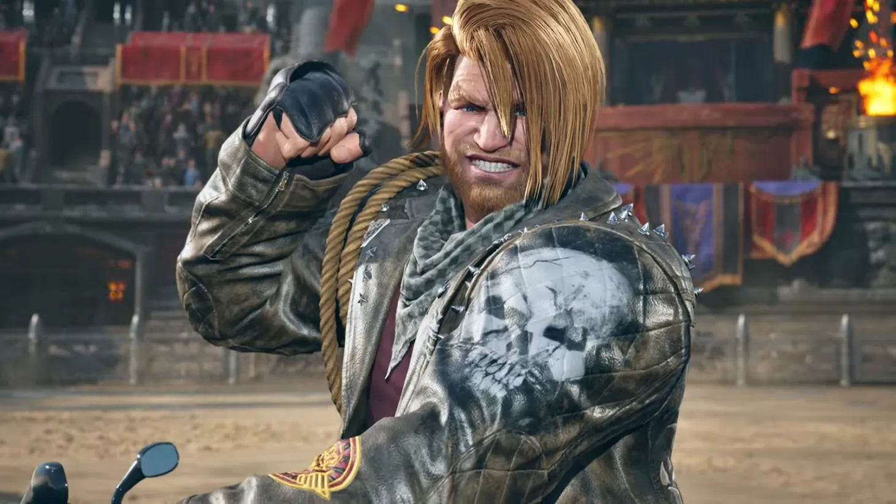

Jin Kazama is one of the main protagonists in the Tekken series. He is the son of Kazuya Mishima and Jun Kazama. Jin possesses the Devil Gene which gives him powerful abilities, but he constantly struggles to control it. He fights to end the Mishima bloodline and stop the global conflict.